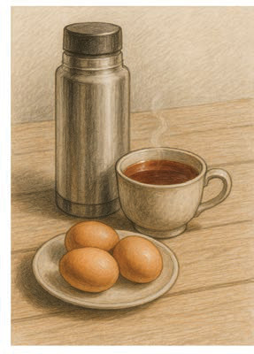
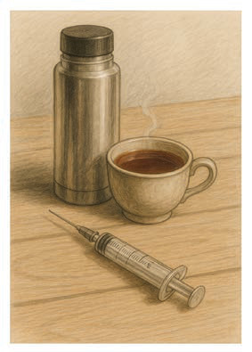

Picha zenye mshikamano
Mshikamano katika uchoraji wa picha ni hali ya vitu vinavyochorwa kuonekana kuwa na uhusiano. Mshikamano husaidia mtazamaji kuelewa ujumbe au hisia iliyokusudiwa na mchoraji. Ili kuchora picha yenye mshikamano ni vema kuzingatia uhusiano wa vitu katika picha. Kielelezo namba 27 kinaonesha picha yenye mshikamano kwa kuwa vitu vinavyoonekana kwenye picha vina uhusiano. Katika Kielelezo namba 28 picha hiyo haina mshikamano kwa sababu vitu vinavyoonekana katika picha havina uhusiano.



Tumia penseli na karatasi kuchora picha yenye mshikamano wa vitu vyovyote vilivyopo katika mazingira ya shuleni au nyumbani.
Tumia penseli na karatasi kuchora picha isiyokua na mshikamano inayoonesha vitu vyovyote vilivyopo katika mazingira ya shuleni au nyumbani.